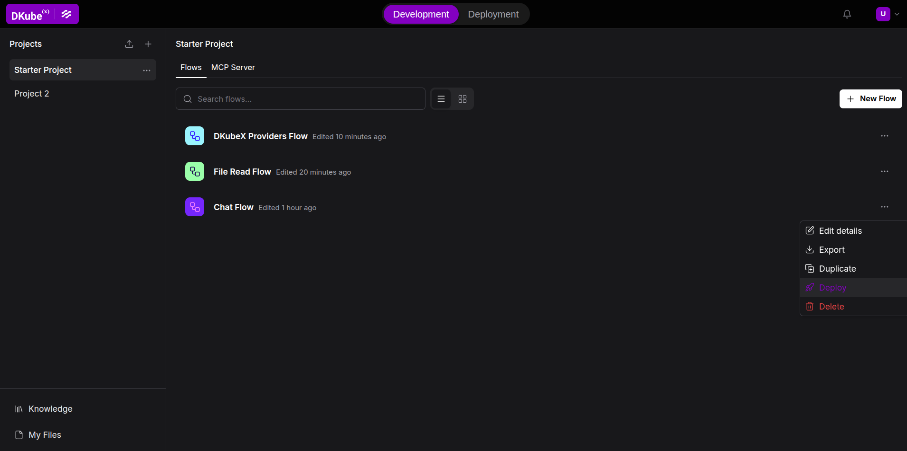
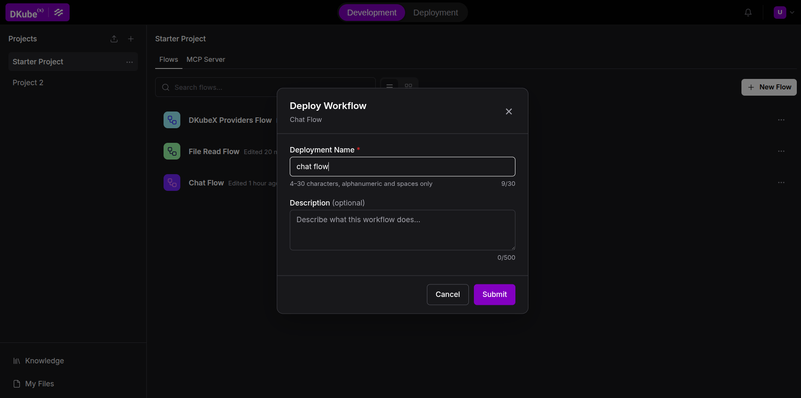
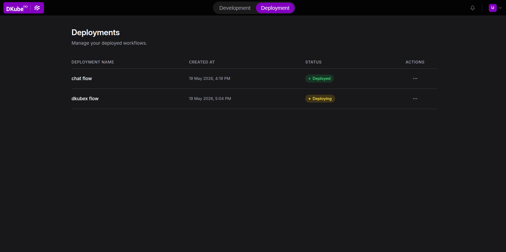
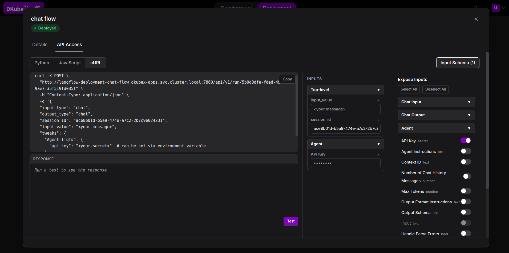

Deploying Flows¶
Langflow on DKubeX lets you promote any flow from the canvas into a standalone, always-on API endpoint running in the cluster. Each deployment gets its own Kubernetes pod, internal DNS name, and a ready-to-use cURL command.
How It Works¶
When you deploy a flow, DKubeX:
Creates a dedicated Kubernetes
Deployment,Service,ConfigMap, andSecretin the cluster.Bakes the flow JSON into the pod via the ConfigMap.
Resolves any Global Variables referenced by the flow and injects them as environment variables in the pod Secret.
Runs the same Langflow image as the main instance, so the deployed flow behaves identically.
Deploying a Flow¶
From the Flow Canvas (quickest)¶

Open the flow you want to deploy in Development Mode.
Click the three-dots ⋯ menu next to the flow name, in the flows list.
Click Deploy.
In the Deploy Workflow modal, fill in:
Name — 4–30 characters; letters, numbers, and spaces only. This becomes the deployment’s identifier.
Description (optional) — up to 500 characters.
Click Deploy. The modal closes and you are switched to Deployment Mode where the new deployment appears in the table.

From Deployment Mode¶
Click Deployment in the header tab switcher to open the Deployments table.
Previously deployed flows are listed here. To deploy a new flow, return to the canvas and use the method above — there is no separate “new deployment” button in the table view.
The Deployments Table¶
Deployment Mode shows a live table of all your deployments, updating every 5 seconds.

Column |
Description |
|---|---|
Name |
Display name given at deploy time |
Created At |
Timestamp in your local timezone |
Status |
Current state (see below) |
Actions |
Three-dots menu: Logs, Edit Resources, Remove |
Deployment Status¶
Status |
Meaning |
|---|---|
Deploying |
Pod is starting up. Usually resolves within 1–2 minutes. |
Deployed |
Pod is running and ready to accept requests. |
Failed |
Pod failed to start. Check logs via ⋯ → Logs. |
Removing |
Deletion in progress. Row disappears once Kubernetes finishes cleanup. |
Viewing Deployment Details¶
Click any row (when not in Removing state) to open the detail panel:
Description tab — View or edit the deployment description.
API Access tab — Shows the API Access details to call this deployment, similar to the one available in the worklow canvas in development mode. Only available when that particular deployment’s status is
Deployed. The API Access tab also has an Input Schema containing the possible inputs to be added to the API request to the deployment. The inputs can be added, removed or altered to test the payload or cURL request to the deployment.
Note: The deployment endpoint (
*.dkubex-apps.svc.cluster.local) is accessible from within the cluster only. For external access, contact your cluster administrator.

Deployment Logs¶
Click ⋯ → Logs on any deployment row to view the last 500 lines of the pod’s logs. Use this to diagnose Failed deployments.
Editing Resources and Environment Variables¶
Click ⋯ → Edit Resources (only available when Deployed) to:
Adjust CPU and memory requests and limits.
Add, edit, or remove environment variables.
Saving triggers a rolling restart. The existing pod continues serving requests until the new one is ready.
Removing a Deployment¶
Click ⋯ → Remove Deployment and confirm the prompt. The row transitions to Removing and disappears once Kubernetes finishes cleanup.
Removing a deployment does not delete the flow from Langflow — it only stops the standalone serving pod. You can re-deploy the same flow at any time.
Troubleshooting¶
Deployment stays in “Deploying” for more than 5 minutes
After 5 minutes without becoming ready, the status automatically changes to Failed. Check logs via ⋯ → Logs. Common causes: image pull failure, missing global variables, insufficient cluster resources.
Deployment shows “Failed”
Open logs to see the error. Common causes:
Missing Global Variables — the flow references a variable that isn’t defined. Add it in Settings → Global Variables and re-deploy.
Python error on startup — a component fails to initialize. The traceback is in the logs.
ImagePullBackOff — the runtime image cannot be pulled. Contact your cluster administrator.
“Name already in use” error when deploying
A deployment with the same name already exists, or a previous one is still terminating. Wait ~30 seconds and try again, or choose a different name.
“The following global variables are referenced but not found”
The flow uses Global Variables that are not defined in your Langflow settings. Go to Settings → Global Variables, add the missing variables, then deploy again.